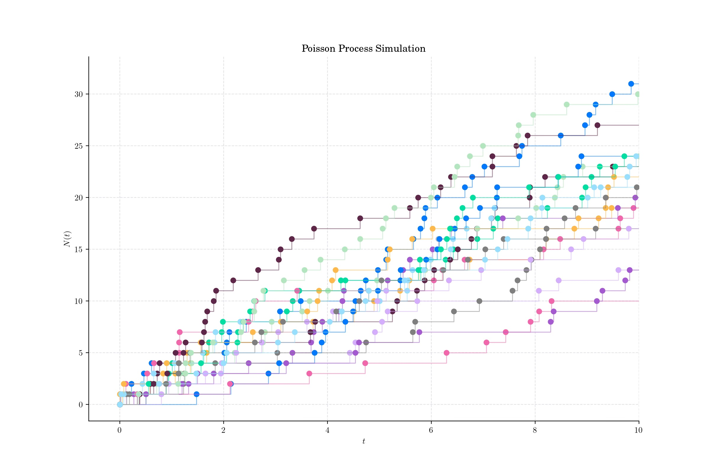
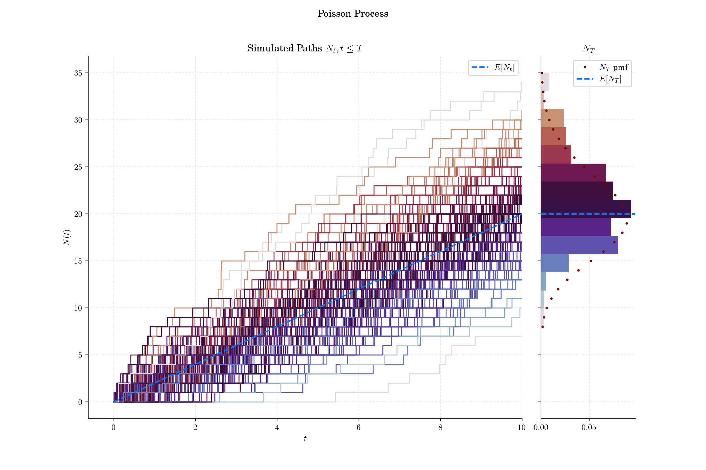
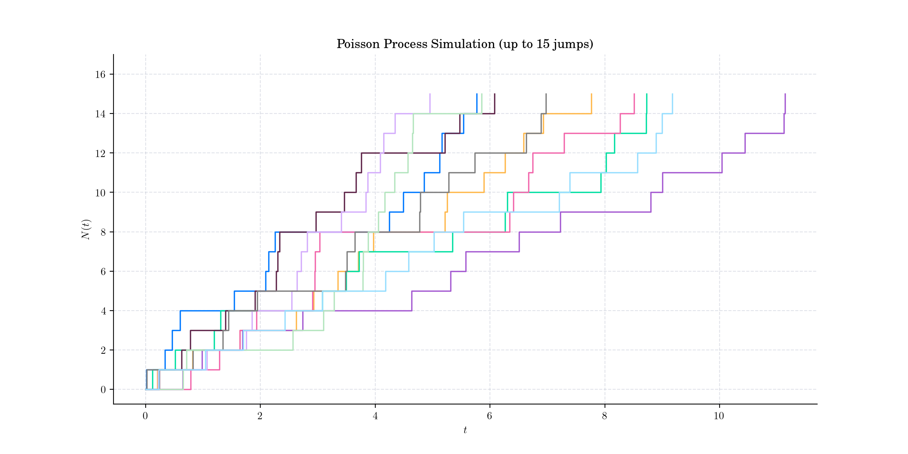
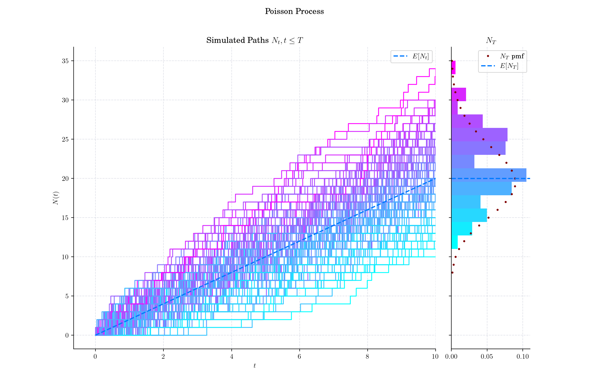

Day 2: Poisson Process#
In probability theory a Poisson point process (also known as: Poisson random measure, Poisson random point field and Poisson point field) is a type of mathematical object that consists of points randomly located on a mathematical space with the essential feature that the points occur independently of one another.
At its core, a Poisson process describes events that occur independently and at a constant average rate over time or space. It’s your go-to tool when you’re analysing rare events or random occurrences. There have been many applications of the Poisson process (defined on the real line) in an attempt to model seemingly random and independent events occurring. It has a fundamental role in queueing theory, which is the probability field of developing suitable stochastic models to represent the random arrival and departure of certain phenomena. For example, customers arriving and being served or phone calls arriving at a phone exchange.

Definition (on the real-line)#
Let \(\lambda>0\) be fixed. The counting process \(\{N(t), t\in [0, \infty)\}\) is called a Homogeneous Poisson process with intensity/rate λ if all the following conditions hold:
\(N(0)=0\);
\(N(t)\)Â has independent increments;
The number of events (or arrivals) in any interval of length \(t\) is a Poisson random variable with parameter \(\lambda t\). That is


Simulation with marginal distribution on the side. Each path is coloured according to the value of its last point to match the histogram of the marginal distribution.
🔔 Random Facts 🔔#
Despite its name, the Poisson point process was neither discovered nor studied by French mathematician Simeon Denis Poisson (1781–1840). It is cited as an example of Stigler’s law of eponymy which  states that no scientific discovery is named after its original discoverer!
In 1903, Swedish actuary, and mathematician Filip Lundberg published a thesis containing work, now considered fundamental and pioneering, where he proposed to model insurance claims with a homogeneous Poisson process. However, it is believed that mathematician William Feller was the first in print to refer to it as the Poisson process in his paper: W. Feller. On the integro-differential equations of purely discontinuous Markoff processes. Trans. Amer. Math. Soc., 48:488–515
In finance, the Poisson process is widely used to model the occurrence of “rare†events, such as defaults, claims, or jumps in asset prices. For instance, in credit risk modelling, it is employed to describe the likelihood of a borrower defaulting within a certain time frame, where the default is treated as a random, independent event.
The Poisson process can also be defined by stating that the time differences between events of the counting process are exponential variables with mean \(\frac{1}{\lambda}\). The time differences between the events or arrivals are known as  interarrival  or interoccurence times. This implies that the points have the memoryless property: the existence of one point existing in a finite interval does not affect the probability (distribution) of other points existing, but this property has no natural equivalence when the Poisson process is defined on a space with higher dimensions.

Simulated paths until each one reaches 15 jumps

Interarrival times follow an Exponential distribution

Simulation with marginal distribution on the side
P.s. If you are curious about probability distributions visit the Advent Calendar 2023 ✨